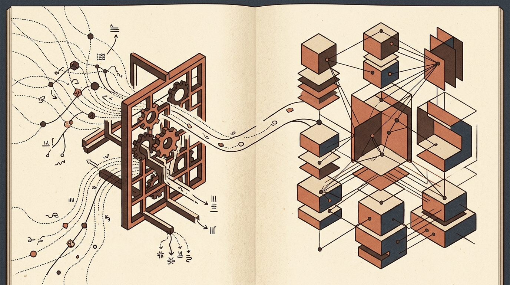
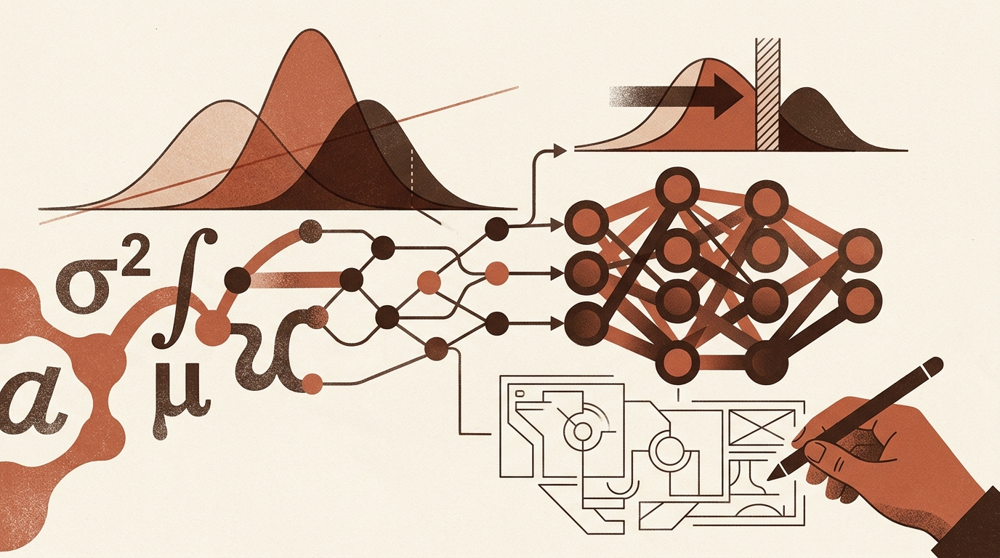
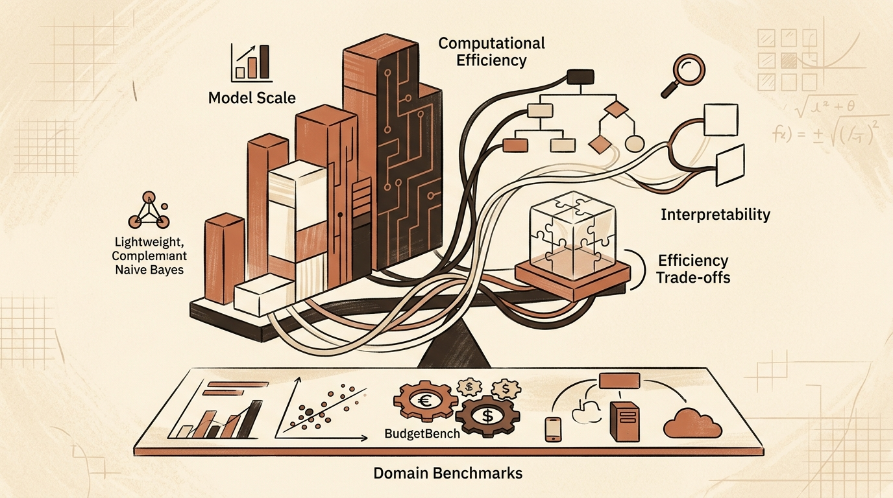
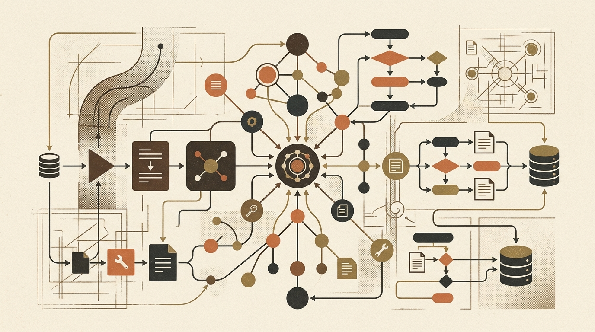
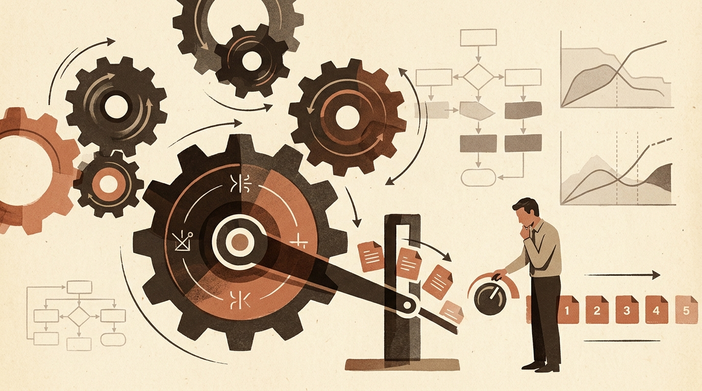
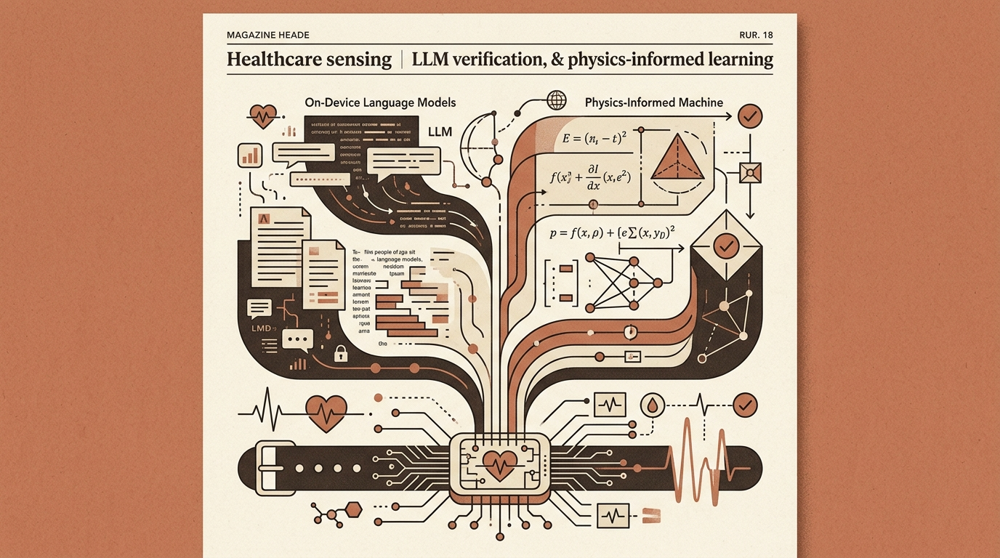
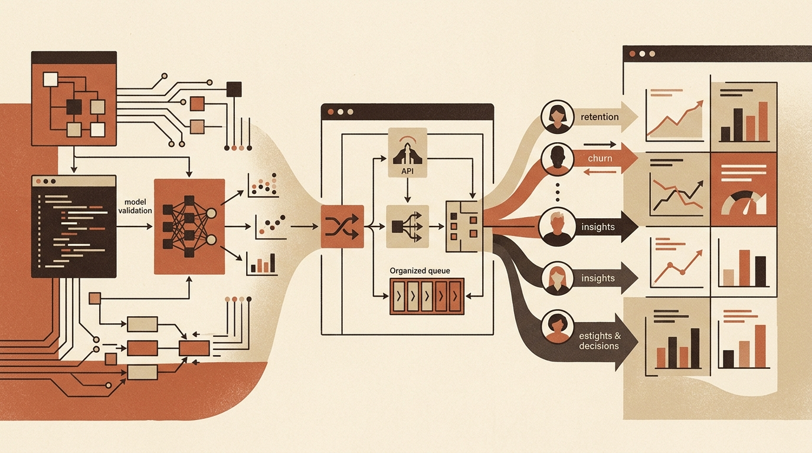

Recent days
Pick a date above, or open a day below. Each source gets one post.
-

Towards Data Science Synthetic Data Filtering Risks and Transformer Representation Geometry -


-
 Towards Data Science Refining Reliability and Value in AI Pipelines
Towards Data Science Refining Reliability and Value in AI Pipelines -

-
 Hugging Face Blog Optimizing Vision-Language Inference Efficiency with LFM2.5-VL-DSpark
Hugging Face Blog Optimizing Vision-Language Inference Efficiency with LFM2.5-VL-DSpark -

-
 Towards Data Science Robust AI Evaluation, Decision Engines, and Specialized Workflows
Towards Data Science Robust AI Evaluation, Decision Engines, and Specialized Workflows -
 Sebastian Raschka Architectural and Reinforcement Learning Insights from MiMo-V2.6 Pro
Sebastian Raschka Architectural and Reinforcement Learning Insights from MiMo-V2.6 Pro -

-
 Hugging Face Blog Hugging Face Integrates llama.cpp Quants and Expands MLX Support
Hugging Face Blog Hugging Face Integrates llama.cpp Quants and Expands MLX Support -

-
 Towards Data Science Evaluating Model Safety, Operational Data Valuation, and Production Code Risks
Towards Data Science Evaluating Model Safety, Operational Data Valuation, and Production Code Risks -

-
 Hugging Face Blog Physics-Based Model Pruning and Benchmarking Tokenizers v1
Hugging Face Blog Physics-Based Model Pruning and Benchmarking Tokenizers v1 -

-
 Towards Data Science Architectural Enhancements in GraphRAG and Convolutional Attention
Towards Data Science Architectural Enhancements in GraphRAG and Convolutional Attention -
Sebastian Raschka Revisiting Jev's Role Beyond Basic Classification
-
 Towards Data Science Pragmatic Pipeline Design and the Pitfalls of Automated Coding
Towards Data Science Pragmatic Pipeline Design and the Pitfalls of Automated Coding
-
 Towards Data Science Managing the Operational Realities and Maintenance Taxes of Production AI
Towards Data Science Managing the Operational Realities and Maintenance Taxes of Production AI -

-

Towards Data Science Statistical Foundations, Practical Classification Limits, and AI-Assisted Design -
Hugging Face Blog Evaluating Consistency and Reliability in AI Agent Performance
-

-

Towards Data Science Structuring Agent Workflows and Dynamic Knowledge Systems -

Sebastian Raschka Sebastian Raschka on AI Model Pacing and Release Cadence -

-

Towards Data Science Operationalizing Models and Measuring Their True Impact